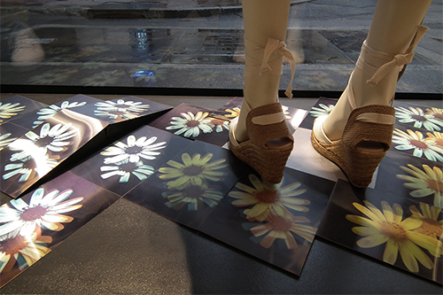
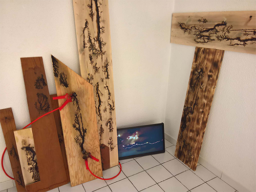

Vue de l'exposition, au premier plan Trichromatisme, synthèse additive des couleurs chez l'abeille GBUV (Green / Blue / UV), trois cadreurs RGVBW programmable. Exposition de la recherche, Sabrina Issa, LAAB, CRAC Occitanie, Sète 2020.

Msabb, المصب aménagement paysagé in situ avec les matériaux et déchets existants sur le site. Installation pérenne de 150m2, Médina de Tunis, Tunisie, 2019-2018. Atef Mataallah avec Aziz Ghariani, Arwa Labidi, Sabrina Issa, Belhassen Chtioui. Assistant de production Ali Kacem.

Vue d'exposition, Senecio sp. Tirages lenticulaires formats A5 (100 exemplaires), Sabrina Issa, Agnès b. Production MOCO Montpellier contemporain, 2019.

Au premier plan, Trichromatisme, du point de vue des insectes, GBUV (Green / Blue / UV), Sabrina Issa, exposition Aeéroport à insectes, Domaine de Restinclières, LAAB 2018.

Vidéo, simulation en images de synthèse de la vue dʼune abeille en déplacement, François-David Collin, exposition Aeéroport à insectes, Domaine de Restinclières, LAAB 2018.
Synthétisant plusieurs de nos connaissances actuelles sur la vision des abeilles, cette vidéo en propose la simulation. Perception des UV, profondeur de champ limitée à quelques centimètres et sensibilité quasi exclusivement liée au mouvement et à la vitesse : tous ces éléments induisent une visibilité extrême des détails de la dynamique de l'environnement, et en particulier du moindre grain de poussière, saisi dans une vision cinétique pure.

Arborescences électriques, installation et vidéo, dimensions variables, Delphine Chevrot, résidence de recherche à la Maison d'Emma, Saint Mathieu de Tréviers, LAAB 2018.

Vue de l'installation, Variation pour montée de sève, néons à LED (3m), électroniques et données relatives à la vitesse de montée de sève. Installation réalisée avec le soutien du CDA, Centre des Arts d’Enghien-les-Bains – Ecritures numériques - exposition L'Art se fait Nature, Les Vendémiaires, LAAB 2018.
Work in progress, Plantes pangéniques, installation dimensions variables, Sabrina Issa. Exposition Fractographie, co-production Reticular, Les Limbes, Saint Etienne, LAAB 2018.

Analyse de sol, Ateliers de recherches et de créations, Maison Centrale de Poissy, avec Nicolas Bralet, Delphine Chevrot et Sabrina Issa, janvier 2017. Interventions à l'année réalisées avec le soutien de la DRAC Île de France, du SPIP.
Concerto pour montée de sève, installation sonore cinq enceintes, électroniques et données de flux de sève. Exposition collective Curiositas, Parc du Château du CNRS, La Diagonale Paris-Saclay, Gif-sur-Yvettes. LAAB, 2018.
 Concerto pour montée de sève, Premiers mouvements atmosphériques.Work in progress Nicolas Bralet, François Collin et sabrina Issa. Château Ephémère - Fabrique sonore et numérique - Carrières-sous-Poissy, octobre 2016, photo. Delphine Chevrot.
Concerto pour montée de sève, Premiers mouvements atmosphériques.Work in progress Nicolas Bralet, François Collin et sabrina Issa. Château Ephémère - Fabrique sonore et numérique - Carrières-sous-Poissy, octobre 2016, photo. Delphine Chevrot.
 L 2m50 - l 2m40 - H 5m).jpg) Résidence du 06/2016 - 08/2016 de Cha-wen Tsai et Nicolas Bralet.
Résidence du 06/2016 - 08/2016 de Cha-wen Tsai et Nicolas Bralet.Soulangh Cultural Park, Jiali district de Taïnan (Taïwan).
L’exposition «Promenade» a été réalisée à l’issu de 3 mois de résidence de création au Soulangh Cultural Park à Jiali, un district de la ville de Taïnan (Taïwan).
Le projet réalisé in situ, est lié àl’identité du parc et plus largement avec l’environnement de Jiali.
 ECRITURES SONORES_HEMISPHERES#2
, Trio pour montée de sève, installation sonore avec Nicolas Bralet, François Collin et sabrina Issa. Bains numérique#9, cda d'Enghien les bains, LAAB 2018. Photo Delphine Chevrot.
ECRITURES SONORES_HEMISPHERES#2
, Trio pour montée de sève, installation sonore avec Nicolas Bralet, François Collin et sabrina Issa. Bains numérique#9, cda d'Enghien les bains, LAAB 2018. Photo Delphine Chevrot.After work #2, L'atelier de Chromatographies, Delphine Chevrot
Résidence de recherche au Château Ephémère, Carrières-sous-Poissy, déc. 2014.
 Avant-premiere, avec Nicolas Bralet, Delphine Chevrot, Sabrina Issa et Fred Maury. Résidence de recherche au Château Ephémère - Fabrique sonore et numérique, à Carrières-sous-Poissy, juin 2014.
Avant-premiere, avec Nicolas Bralet, Delphine Chevrot, Sabrina Issa et Fred Maury. Résidence de recherche au Château Ephémère - Fabrique sonore et numérique, à Carrières-sous-Poissy, juin 2014. Exposition collective, Contre-nature
Variation pour montée de sève, Sabrina Issa
Exposition collective, Contre-nature
Variation pour montée de sève, Sabrina IssaSyndicat Potentiel Strasbourg, mai-juin 2014.
 11ème Semaine du Son, Nicolas Bralet. Auxerres, fév. 2014.
11ème Semaine du Son, Nicolas Bralet. Auxerres, fév. 2014.
 Le vivant et son énergie, INRA Versailles-Grignon, Versailles, 2013.
Le vivant et son énergie, INRA Versailles-Grignon, Versailles, 2013.Détail de l'installation, vue du gyrophare à LED et du dispositif de captation météo.
Le vivant et son énergie , INRA Versailles, Versailles, 2013
Conçue tel un protocole expérimental, la Station permet de rendre visible les fluctuations climatiques et leurs incidences sur un arbre témoin, le Ginkgo biloba. La vitesse de rotation et la couleur du gyrophare qui surplombe l'installation est liée à l'activité de montée de sève de l'arbre sur le site.
Sculpture en l'Ile, Nicolas Bralet, Solo pour montée de sève, Andrésy, 2012.
Version "phytotron", intégrant un arrosage d'appoint.

Biennale la Science de l'Art, Pièce sonore pour montée de sève, Nicolas Bralet, François Collin, Sabrina Issa et Hugo Roger, Essonne 2011.
Composition sonore spatialisée sur deux hauts-parleurs waterproof à partir de la vitesse de montée de sève de deux Cussonia spicata.
 Galerie Michel Journiac
, Solo pour montée de sève, Nicolas Bralet, Sabrina Issa et Hugo Roger, Paris, 2011.
Galerie Michel Journiac
, Solo pour montée de sève, Nicolas Bralet, Sabrina Issa et Hugo Roger, Paris, 2011.  Festival Cahors juin jardin, Pièce sonore pour montée de sève, Nicolas Bralet, Sabrina Issa et Hugo Roger, Cahors, 2010.
Festival Cahors juin jardin, Pièce sonore pour montée de sève, Nicolas Bralet, Sabrina Issa et Hugo Roger, Cahors, 2010. Les Subsistances, Pièce sonore pour montée de sève, Nicolas Bralet, Sabrina Issa et Hugo Roger, Lyon, 2010.
Les Subsistances, Pièce sonore pour montée de sève, Nicolas Bralet, Sabrina Issa et Hugo Roger, Lyon, 2010.
Mains d'Œuvres, résidence de recherche et de création, avec Nicolas Bralet, Sabrina Issa, Bruno Persat, Sonia Levy, Emilie Schalck et Gratianne Scherdlin, 2009.